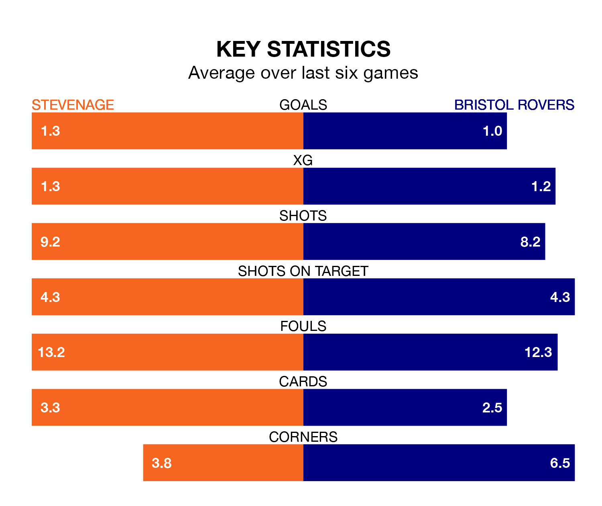

Bristol Rovers travel to Stevenage on late Tuesday in EFL League One.
The visitors come into the game on the back of a defeat in their last match, having lost to Burton Albion 2-1 at home, with a goal from Anthony Evans.
The Boro, meanwhile, drew their last match, 2-2 against Port Vale, with their goals scored by Jamie Reid and Terence Owen Vancooten.
In Reid, Stevenage have the league's most on-form striker so far this season. He has notched 17 goals in 29 appearances.
His goal rate of one every 137 minutes is slightly quicker than that of Chris Martin, Rovers' top scorer with a goal every 130 minutes, and a total of 11 goals in 21 games.
In the last 10 years, Stevenage and Rovers have played each other on six occasions. Stevenage won three of them, Rovers one, and they drew twice.
On average, the Boro scored 1.0 goal and the Gas 1.0 in those matches.
Their last meeting was on October 24, when they played out a 1-1 draw.
With 44 goals in 30 games so far this season, the Boro are scoring more than average in the league with 1.5 goals per game. And they are conceding fewer than average, letting in 30 goals at a rate of 1.0 per game.
The Gas, meanwhile, are average scorers, with 1.3 goals per game. They have conceded 1.4 goals per game.
The hosts are sixth in the table after 30 games, of which they have won 15 and drawn eight, earning 53 points.
The away side are seven places behind Stevenage in 13th, with 11 wins and seven draws putting them on 40 points.
Stevenage are in mixed form in EFL League One, with three wins and a draw from their last six games.
With two wins and four losses over that period, Rovers' form is worse – they have taken six points from 18, compared to the Boro's 10.
Updated: 09:02 (UTC), 13/02/24